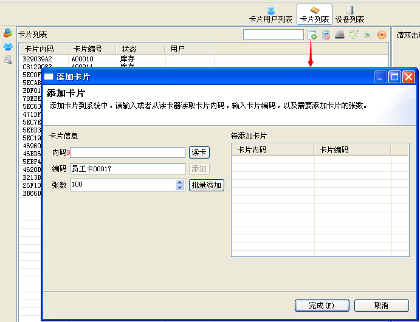
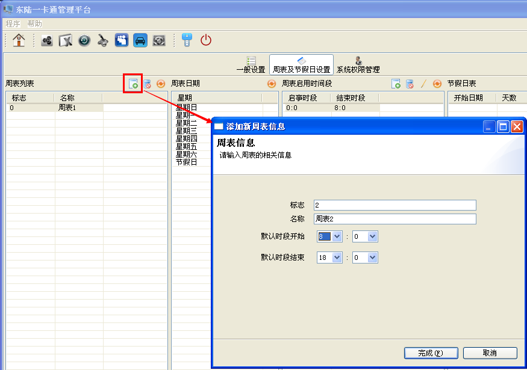
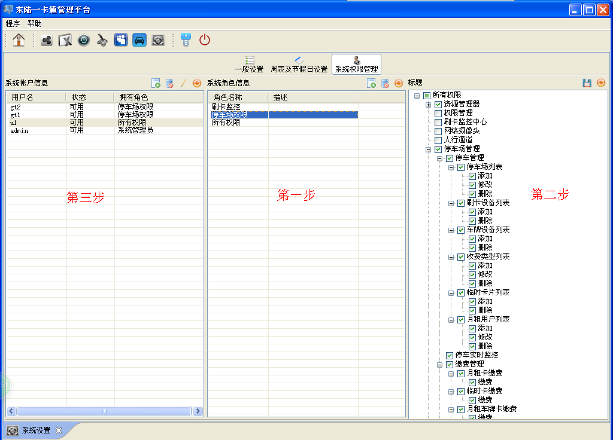
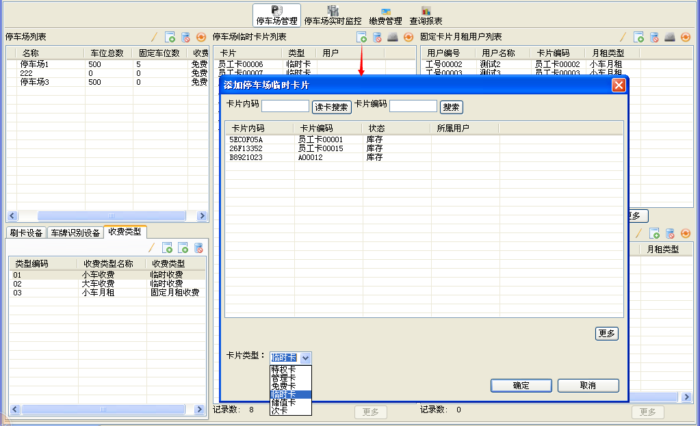
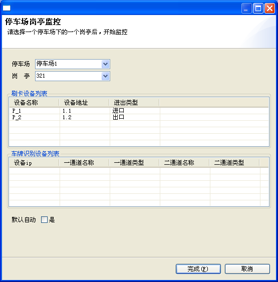

快速安装
进入一卡通主程序安装包，找到名为“服务器版.exe”的图标，双击即可进入安装程序，如图：
☞注意事项：
- 安装前需插入加密狗，为了能正确识别加密狗，还需要事先安装加密狗驱动
第一步我们需要做的是选择注册码序列号文件，也就是后缀名为”.key“的文件，正确选择之后，”下一步“按钮变为可用，如下图：
正确选择了注册码文件点击下一步之后，接下来将看到如下界面：
连接类型是指数据库类型，下拉框有三个类型可供选择，SQLSERVER2008，SQLSERVER2005，MYSQL。正确填写数据库相关连接信息后，点击“连接测试”按钮将提示“测试连接成功”，这时，“检查表”按钮变为可用，点击，如果提示“不存在相关数据表”（一般软件首次安装，数据库服务器里事先没有名为“onecard”的数据库时有此提示），则“初始化数据表“按钮变为可用”，必须先初始化才能点击下一步；如果检查表时提示”已存在相关数据表“，则直接进入下一步，下一步将设置设备扫描间隔时长，这个参数决定了设备轮询的快慢，原则上可以取默认值无需另行设置。最后点击完成，整个安装过程结束，程序将跳到登陆界面，首次安装，系统初始用户名和密码都是admin。
☞对于第一步测试连接失败的原因，可能的原因有：
- 1.数据库用户名和密码输错，这是最容易排除的，进入数据库登陆验证一下就可知
- 2.端口号未启用，可进入SQL Server配置管理器进行查看
- 3.可能是删除数据库时出现异常,虽然数据库列表中不存在名为”onecard“的数据库，但是数据库文件onecard.mdf和onecard_log.LDF依然存在，这种情况也会造成测试连接失败，需手动删除这两个文件
资源管理
资源管理器包含三个模块，卡片用户列表，卡片列表，设备列表。主要用于用户、卡片、设备的添加和删除等操作。下面是资源管理器的界面图：
快速操作指南
快速操作指南旨在针对一些模块的的操作做一个快速流程说明，每个流程都是一个超链接，将链接到对应的操作步骤说明，以便新用户能快速入手。
资源管理模块的主要操作流程如下：添加设备→添加用户→添加卡片→用户分配卡片（方法1,方法2）
设备管理
软件目前支持消费机，门禁协议，停车场协议的设备
添加设备
添加设备前，必须先添加与该设备对应的连接。所谓连接，就是规定了连接类型（TCP连接/串口连接），连接地址（对于TCP连接类型来说地址是具体IP，对于串口连接地址是COM1，COM2等）以及协议类型等。那么如何添加连接呢？请看下图：
如上图，最左边侧面三个按钮中最后一个，就是连接管理，点击展开，将看到下图的添加连接的界面：
上面是添加TCP/IP连接，连接地址输入实际的IP地址，10001是端口号（默认），IP和端口之间用冒号隔开；消息类型选择门禁，停车场或者消费机；连接方式有直连设备和区控两者可选；连接名称顾名思义，是给该连接一个命名，对于连接较多，楼层复杂的情况，原则上命名要能区分出连接所在的位置。主机名称是一个IP地址，可从下拉列表中选，如果不存在可以自行添加。如果添加的是串口连接，步骤基本上是一样，只是连接地址形如COM1，COM2，并且只能从下拉列表当中选择，因为软件会自动识别有哪些串口。需要注意的是，可以看到填写完连接的基本信息后，可以直接选择完成，这样做的话，只是添加了连接，还没有添加设备进去，如果需要添加设备，需要到设备列表中进行添加操作，选择相应的连接。
☞注意事项：
- 主机名称的选择很重要，很多时候设备与软件之间不能正常通讯都是主机名称选择错误造成的。主机名目前软件需强制写成IP地址的形式，因为不管是客户端还是服务器，启动后底层硬件服务开启的主机名都是本机的IP。只有该底层服务开启了，该主机名对应的连接下的设备才能通讯。那么如何开启底层服务呢，如下图所示，轮询勾选的话，刷卡记录就能上传，不勾选的话，不影响权限的下发，但是刷卡记录不能上传
添加步骤进行到下一步，界面如下
设备标志、设备名称和地址都是必填项，其中地址格式形如1.1,1.2... 1.32,可批量添加（写上起始地址和截止地址），物理连接在这一步不可选，就是指当前的连接。
☞注意事项：
- 设备标志是唯一的，必须与之前添加的设备标志不同，否则最后将报错，无法添加成功
以上设备信息填写完毕，点击下一步，将进入设备分组操作，如下图所示：
选择相应设备组（设备子组），点击添加到右边列表，单击完成，就可以将设备添加到一个或多个设备组下面
☞注意事项：
- 为了使设备能归类到用户想要的设备组，在添加设备前要先添加好设备组
修改设备
系统首次加载到设备列表时，只显示设备列表，这时需双击所要修改的设备，在右侧会显示设备详细信息，如下图所示
修改信息完毕，点击绿色的“√”，即可保存。
添加发卡器
发卡器无需添加，只需验证串口，在插入发卡器的前提下，将卡片放置在读卡器上读卡检测验证成功的话，图标将变为绿色，选择确定，以后只要发卡器串口未改变，发卡器就可以直接使用，无需重复验证。如下图所示：
☞注意事项：
- 1.需事先安装USB发卡器驱动，软件所需的驱动（包括后面的二代证驱动）统一在一卡通软件的安装包下的bin\driver目录下可以找到
- 2.需要在一卡通软件开启之前将发卡器插上，否则系统无法在串口列表中加载到该串口
添加身份证阅读器
只需在安装完二代证USB驱动后插上身份证阅读器即可使用，无需另行添加。
用户管理
资源管理器里的卡片用户列表，即用户管理模块，用于用户的添加、修改、删除等操作。添加用户之前，请先添加好用户组，完善好用户分组结构，这样可以避免后续再对用户进行分组。
添加用户
在卡片用户列表里点击添加按钮，将弹出如下界面：
第一步请输入用户的一些基本信息，用户编号是默认自动生成的，也可以自行修改，通常不建议在这里修改，而是在系统设置里对编码前缀统一设置。用户名和身份证是必填项，否则无法下一步。如果需要给用户分配卡片，请留意右边分配卡片一栏，如果该卡片已经事先添加到了系统当中，则点击读取卡片，该卡片将分配给当前所创建的用户；如果该卡片之前尚未添加到系统中来，则点击”读取卡片”之后，下面的“添加卡片“按钮变为可用，必须点击添加卡片，该卡片才会添加到系统中来，并分配到该用户。
☞注意事项：
- 用户名和身份证的输入框前面有红色的标记，这表明这两项是必填项，必填项不填写的话”下一步“按钮不可用，后面软件的其他模块很多都是这样处理的，请仔细对照填写。
接下来下一步就是给用户分组了，这里的步骤和上面设备分组的步骤雷同，就不再重复。这样添加用户的操作就已完成。
修改用户信息
在卡片用户列表中选择所需修改的用户，双击之后将在右边展开用户详细信息，如下图所示：
通过用户详细信息的界面，可以对一些用户的基本信息进行修改，可以添加删除用户分组，还可以给用户添加或删除卡片，以及卡片挂失和解挂等操作。其中用户分组，用户卡片，和卡片变更这三个模块操作完之后是无需选择”√“自动保存了，其他信息的修改都需要点击右上方的”√“进行保存。”扩展信息“里主要是一些身份信息，在安装了二代证阅读器的情况下，读身份证按钮是可用的，点击可以读取到身份证里的信息并显示出来，点击”√“进行保存。如果需要修改用户头像，可以点击”上传“按钮，选择本地保存的用户头像进行替换。
☞小提示：
- 如果用户数量很多，如何在列表中快速查找到该用户呢？除了可以在卡片用户列表上方的输入框中输入用户名或者身份证按回车键查找之外（当然也可以通过卡编号和内码查找，但是实际可能用的很少），还可以通过”读卡“按钮快速读卡查找到该用户
导入导出用户
找到卡片用户列表中用户数据导入和导出的按钮，如下图所示：
对于导入，点击该按钮，将弹出选择数据文件对话框，如果是导出，弹出的就是选择保存用户数据文件的路径。
☞注意事项：
- 待导入的用户数据文件是excel表格，表格里的数据必须包含用户编号，用户名称和身份证三项，否则数据将保存失败，用户编号或身份证也不能重复，否则重复的数据只保存第一个用户的。当然，数据导入失败的原因还有很多，一旦提示有数据导入失败，可以返回表格查看“处理状态“一栏，状态说明将提示：”保存用户失败“，部分错误原因将直接在这里提示给用户。
卡片管理
卡片管理主要用于卡片的添加、修改与删除操作。
添加卡片
进入卡片列表界面，点击添加按钮，弹出如下界面：

可以点击”读卡“按钮，读取卡片内码之后，”添加“按钮变为可用，点击添加到右边待添加卡片列表，完成一张卡的添加，也可以”批量添加“一定数目的卡片（100张以内），点击批量添加之后，只需将卡片一张张按次序放置在发卡器读卡区域，系统会自动将卡片添加到右边，最后点击完成。
☞小窍门：
- 如果手头上没有发卡器或者发卡器坏了的情况下，如果能获知卡片内码，也可以将内码直接填写到这里的内码输入框。通常的做法是利用读头刷卡，通过刷卡实时监控模块获取到卡片内码。
修改卡片
双击该卡片，出来卡片详细信息，如下图：
卡片的基本信息一般情况下不会进行修改，这里需要说明的是卡片事件和卡片权限子模块，都有”刷新“按钮，点击之后列表中列出的分别是最近的刷卡事件和该卡片在哪些备份下有权限。
卡片状态说明
看到上图所示卡片列表状态一列，有库存、分配、停车场，这三种状态是目前软件支持的卡片状态。某卡片如果只是添加到系统中来，并未分配给用户，也没在其他模块（比如停车场）使用，则该卡为库存卡。库存卡如果分配给用户，则该卡状态变为分配。如果库存卡被用于停车场作为临时卡使用，则变为停车场卡片。停车场卡片是不能再分配给用户使用，同样的，已分配的卡片也不能作为停车场卡片使用。关于停车场模块，将在后续介绍。
导入导出卡片
导入导出卡片与导入导出用户类似，只需选择文件路径完成导入导出操作。
☞导入导出用户和导入导出卡片存在如下异同：
- 1.导入用户和导入卡片的功能是一样的（相当于同一个按钮），比如导入用户时，如果数据文件包含正确的卡片信息，依然能够导入这些卡片。导入卡片时亦然。
- 2.导出用户与导出卡片的结果不同，导出用户时只导出用户信息，不会导出用户关联的卡片。而导出卡片时，不仅能把所有卡片信息导出来，还能将卡片关联到的用户信息导出。
权限管理
权限管理模块主要用于权限的添加、修改、删除以及查询等操作，主界面如下图所示：
快速操作指南
如何给卡片用户快速下发权限呢，流程是：选择设备/设备组→选择用户/用户组→点击添加。结合上图所示，可以快速完成权限下发功能。
分配权限
如上图，选择设备或设备组之后，再选择用户或者用户组，点击添加，就可以实现设备/设备组和用户/用户组的权限分配了，设备或用户一次是可以多选的（按住ctrl或者shift再选）。
☞注意事项：
- 仔细看权限管理界面，可以发现用户和设备列表上方都有搜索按钮，可以通过条件快速搜索到用户或设备。
修改权限
在已分配权限列表中选择用户或用户组组之后，保存按钮变为可用，这个时候就可以对权限进行相应的修改操作了（检查周表，检查有效期，有效卡），如下图所示：
权限卡片列表用于显示设备/设备组，用户/用户组下面权限卡片的数量以及具体情况。
查询权限
权限查询主要用于查询卡片用户权限的上传状态，上传状态（类型）有下面几种：已上传，待上传，上传失败，待删除。权限查询的界面如下图所示：
可以通过条件搜索，也支持读卡查询。
系统设置管理
系统设置管理主要用于设置用户和卡片编号前缀，创建系统帐户以及权限范围等操作。
一般设置
该模块用于设置卡片和用户编号的生成规则，可以按系统默认规则，也可以自己设定规则。一旦设置好，以后每次创建卡片或用户时，自动生成的编号就按这个格式产生。界面如下：
对于上图设置的规则，自动生成的用户编号为：工号00001，依次往下类推；卡片编号为：员工卡00001。“恢复缺省值”可以让该模块的设置恢复为默认的初始值。
周表及节假日设置
周表和节假日可以设置刷卡有效的时间点。一旦创建了一个周表，并在下发权限时勾选了该周表，则只能在该周表限定的时间范围内刷卡才有权限。
添加周表
添加周表的界面如下：

其中结束时段不能早于起始时段。
修改周表
修改周表主要是修改周表的时间段，以及添加时间段，如下图所示：
不同的时间段不能重叠，以上图为例，已经添加了00:00-08:00这个时段，如果再添加诸如07:00-12:00这样的时段，则无法添加进去。
系统权限管理
系统权限管理模块主要用于创建登陆账户，并且给该账户指定访问权限，比如管理账户（管理所有模块），停车场账户（主要管理停车场模块）。界面如下：

添加账户
可以参考上图标示的添加账户的三步曲，第一步，创建一个角色，添加角色的过程，就是给该角色取个名字，可以顺带描述该角色的功能；第二步，选中所创建的角色，在右边列表中，勾选你希望该角色访问的模块，选完后不要忘记点击右上方的保存按钮，这样，角色创建完毕；第三步，添加账户，添加账户的界面如下。
输入要添加的用户名，左边列表里是系统事先添加的一些角色，选择所需要的角色，添加到右边，可以添加多个角色。需要说明的是，所有创建的账户初始密码都是123456（系统账户admin除外，admin是系统创建的，密码为：admin），如何修改密码将在后面介绍。
修改账户
修改账户包括两种情形，一种是修改账户的角色，另一种是修改账户密码。修改账户角色的操作如下所示：
选中需要修改的账户，点击如图红色矩形框所示编辑按钮，在弹出来的对话框中对该账户的角色进行修改。
那么如何修改密码呢，请看下面的操作：
按条件依次输入账户信息，再设置新密码，最后点击完成即可修改密码。
刷卡事件监控
本模块可以对刷卡记录进行实时监控查看，也可以对设备进行批量的操作，比如下时间和读版本号。
设备状态监控
设备状态监控界面如下图所示：
如图，在左侧设备组管理栏选择一个设备组，或者选择该设备组下的设备（设备可以同时选多个），然后在设备操作状态栏下选择相应的操作，完成之后下方空白处将显示操作的结果。
刷卡实时监控
刷卡实时监控模块如下图所示：
如上图，进入刷卡实时监控时默认进入的是监控所有设备的窗口，如果需要针对单个设备或者设备组操作，请按如图所示操作，选择需要监控的设备组或者设备，点击完成，将显示该设备（组）的监控窗口，原窗口会保留，可以相互切换，并且所有设备监控窗口不可关闭，但是其他监控窗口可选择关闭。
刷卡记录查询
刷卡记录查询的界面如下所示：
设置所需的查询条件，点击搜索，也可以单独“读卡”搜索，点击“导出”按钮，可以将搜索到的刷卡记录导出。对于右边的图片显示区域，可以展开和收起，在有抓拍到图片的情况下，点击抓拍大图可查看到更为清晰的大图。
停车场管理
如何在我们系统中快速搭建一个停车场，使临时车辆能正常收费，固定车辆能正常进出，以下步骤是必须的：添加停车场→添加停车场设备→添加临时收费→添加临时卡→添加月租收费→添加固定月租卡→月租卡缴费→开启停车场监控。
添加停车场
点击添加停车场按钮，弹出如下所示界面：
如图，总车位数和剩余车位数初始设置时原则上是相同的；“月租用户一进一出”勾选上的话，月租用户就被限制为只能一进一出；后面一些选项也可按实际情况勾选。以上完成之后单击下一步，进入岗亭添加界面，如下图：
输入岗亭名称之后，一定要点击添加按钮将其添加到下方列表中，可以添加多个岗亭，也可以选中列表中的岗亭进行删除。
☞小提示：
- 如果停车场使用过程中发现剩余车位数和实际车位数不相符，可以选择停车场列表中的修改按钮对剩余车位数进行修改，修改的界面和添加界面是一样的，只是修改是在已经添加了内容的基础上进行操作。
添加停车场设备
选择某个停车场，点击添加入口设备或者出口设备，以入口设备为例，如下图所示：
先选择岗亭，再选择设备，添加到右侧列表，点击完成。
添加临时收费
在收费类型里添加临时收费，如下图所示：
如图所示的收费标准，当设置了免费时长和起步收费时长后（免费时长收费选择否，意味着免费时长的设置是生效的），下方列表框中的收费标准需要在总停车时间的基础上减掉免费时长和起步时长。例如，停车总时间为2小时50分钟，则我们需要确定实际用于计算时间段的时长为：2小时50分钟 — 10分钟【免费时长】—5分钟【起步收费时长】=2小时35分钟,应收金额=10【起步金额】+ 4【2小时收费金额】+1*2（35分钟算两个单位时长）最终结果为16，因为16小于一天最大收费45，所以最终收费16，如果当天的收费大于一天最大收费45，则当天只收取45元。 这里需要说明的是，对于单位时长30本身来说，如果恰好是30分钟，则算作两个单位时长
添加临时卡
在停车场临时卡片列表中，点击添加按钮，如下图所示：

只有库存状态的卡片才能被添加为停车场临时卡片，可以选择卡片的类型，一般使用的类型都是临时卡，储值卡和次卡支持充值缴费。
添加月租收费
添加月租收费收费标准如下图所示：
这里可以设置该收费标准的车辆类型（分为大车、小车、摩托车），月租天数，到期前的提醒天数，车位类型分为固定车位和非固定车位。如果为固定车位，则月租用户每增加一个，剩余车位就将减少一个，而不是根据进出来相应地增加与减少；如果是非固定车位，则根据进出情况来进行车位的增减，进一辆车，减少一个车位，出来一辆，增加一个。
添加固定月租卡
在固定卡片月租用户列表里点击添加，如下图所示：
如图，可以选择读卡，则一旦该卡片已经分配给用户，将自动把用户信息填充完成，车辆信息需要根据实际情况手动录入，如果无法读卡，则可点击下一步查找需办理月租的用户，如下图所示：
如上图所示，一旦选择了一个用户，完成按钮将变为可用，点击即可。
月租卡缴费
上面的步骤只是办理了卡片，还需缴费该卡才能正常使用，在缴费管理模块找到月租卡缴费，缴费的操作如下图所示：
如图所示，不设定任何条件点击查询，列表将显示系统中所有的月租卡，也可以按条件搜索和读卡搜索出具体的某个用户和卡片，点击缴费，只需选择缴费期数，系统会自动计算缴费金额，以及到期时间，到期时间按当前时间加上月租天数乘以期数来计算。
停车场监控
停车场监控有单独的程序启动，在系统安装路径下找到名为“停车场.exe”可执行查询，点击启动，如下图所示：
启动并正确输入用户名和密码后，将进入如下界面选择所需监控的停车场和岗亭：

选择需监控的岗亭之后，点击完成，将出现下图所示的监控界面。
上图就是岗亭的监控画面，黑色区域用于显示进出口实时画面（当前未接入摄像头），除了界面上一些显示的信息，平常岗亭人员可能需要操作的按钮有，开进口闸和出口闸，用于手动抬闸，“发卡器出场”用于通过发卡器读卡出场。需要注意的是，每一次手动抬闸都会被记录。当前界面还有一个未显示的模块，就是“记录管理”，单击之后右侧实时监控界面就切换为记录管理界面，可以用于按条件查询进出记录。
临时卡缴费
临时卡缴费针对的是停车场临时卡片类型为次卡和储值卡这两种卡片。
岗亭换班
岗亭换班用于上下班人员任务款项的交接，换班操作在停车场监控界面，如下图所示：
如图所示，弹出换班操作界面后，正确输入下班人员密码和上班人员用户名密码后，点击完成。所收金额将转到上班人员身上，收费员也会有变化。
岗亭归账
岗亭归账用于岗亭人员将所收款项归帐到财务处。归账操作在缴费管理模块的收费员归账里可找到，如下图所示：
操作员是指财务人员，也就是归账所在客户端的登陆用户名，归账用户指岗亭人员。
缴费记录查询
缴费记录查询用于查找月租卡缴费，次卡和储值卡缴费，不包括岗亭人员收费。缴费查询界面如下图所示：
缴费记录支持导出和打印功能。
停车场进出记录查询
停车场进出记录查询在“查询报表”模块，如下图所示：
手动抬闸记录查询
消费管理
消费管理的主要操作流程是：添加消费方式→添加消费模式→设置消费模式组→用户与消费模式组关联→充值。
添加消费方式
消费方式旨在为消费设置一些基本的参数。消费方式的添加如下图所示：
其中消费类型的可选项有单价消费和定额消费，定额消费可以设定第一次到第五次每一次的具体消费金额。
添加消费模式
消费方式与消费机关联，就形成一个消费模式，每一个消费机只能关联一个消费方式，消费模式的添加如下图所示：
如上图，在消费模式列表里点击添加，在弹出的消费模式对话框里输入消费模式的名称，然后选择消费方式和消费机设备，选定完毕，点击下一步，需选择该消费模式包含的钱包类型。如下图所示:
设置完钱包之后，整个消费模式的添加过程就完成了。
添加消费模式组
将若干个消费模式归为一组，就形成消费模式组，模式组的添加如下图所示：
需要注意的是，同一个消费模式组下不能包含相同的消费机。
消费模式组分配
消费模式组分配是指用户与消费模式组进行关联，如下图所示，选中用户，再选择模式组，点击关联。